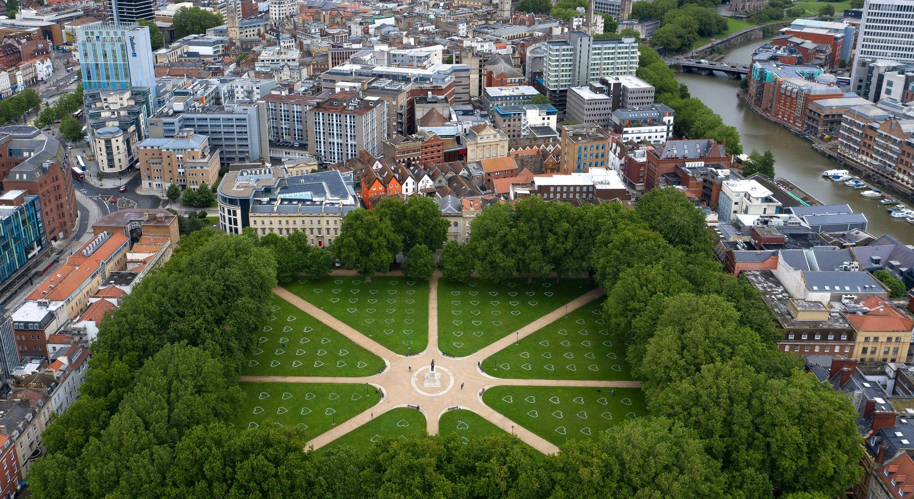
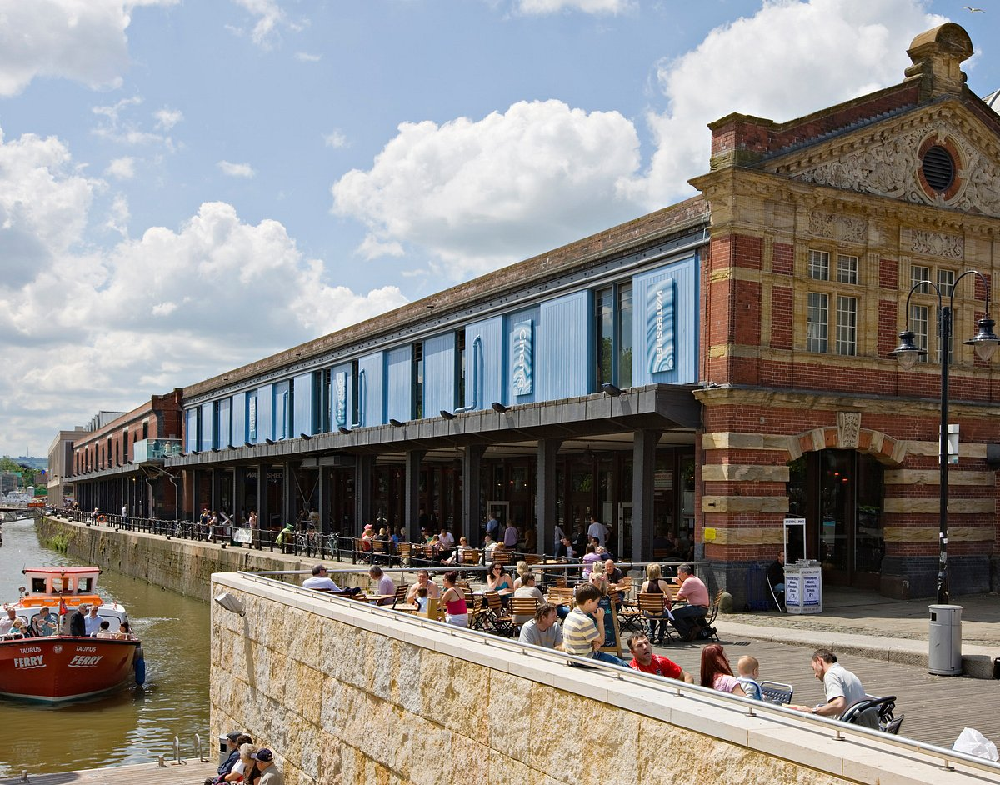
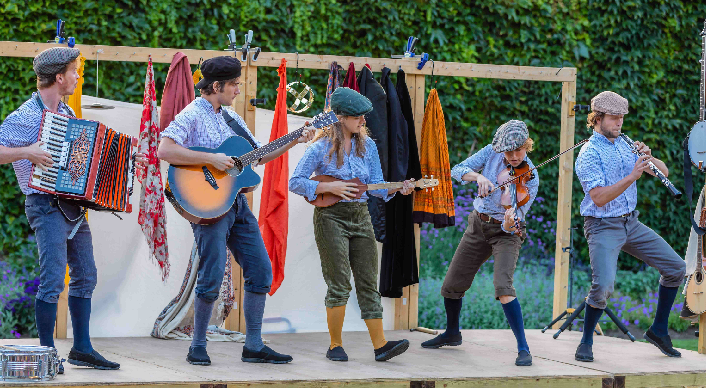
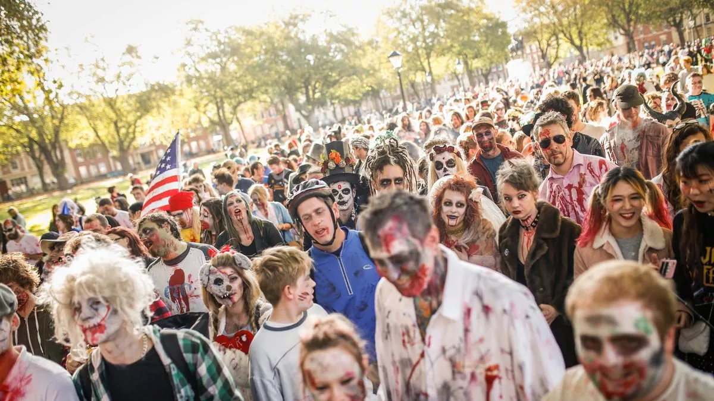

Harbourside Summer Beats
Banksy Street Art Tour
Bristol Foodie Festival
Live at the Louisiana
Family Art Workshop at Arnolfini

Intro to Coding with Bristol CodeHub
Bristol Green Future Forum
St. Paul's Carnival
Picnic in Queen Square

VR Art Showcase at Watershed

Jazz Night at Bristol Beacon
Mural Making Workshop in Easton
Bristol International Balloon Fiesta
Bristol Harbour Festival
Clifton Suspension Bridge Twilight Tour

Bristol Vegan Market
Bristol Shakespeare Festival

Upfest Street Art Festival
Bristol Craft Beer Festival
Bristol Half Marathon
Bristol Improv Theatre Showdown

Science Workshops at We The Curious
Bristol Zombie Walk

Christmas Market at Bristol Cathedral